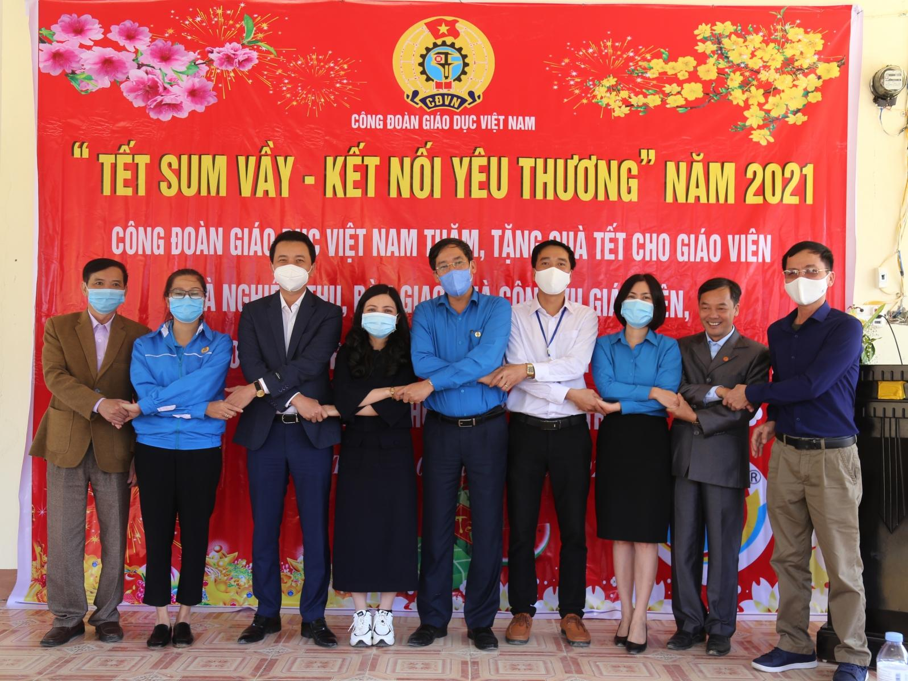
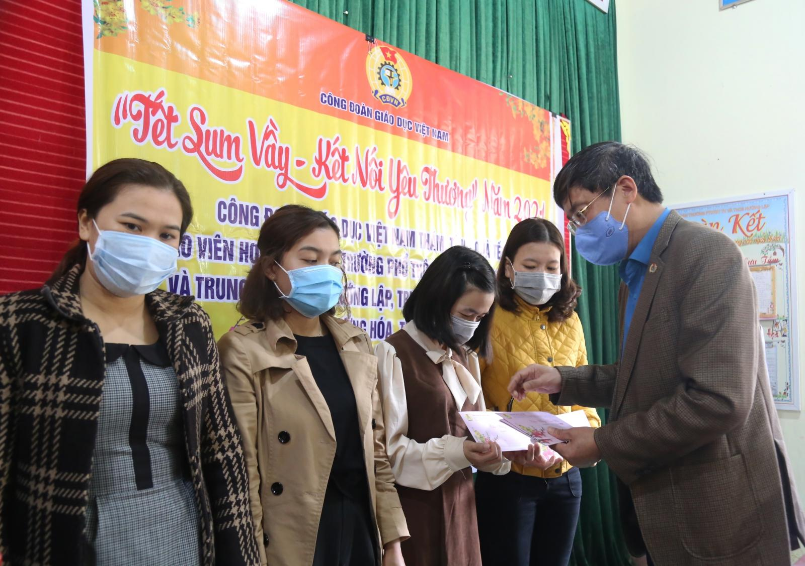
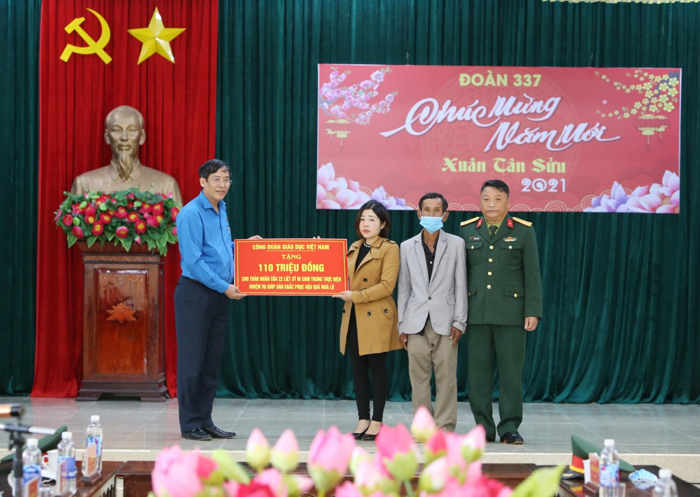

GD&TĐ- Những ngày chuẩn bị bước sang năm mới, vùng đất Hướng Hoá, Quảng Trị vốn chịu nhiều thiệt hại do đợt lũ lịch sử vừa qua đã dần hồi sinh trở lại, mầm xanh non của sự sống trỗi dậy, bắt đầu một cuộc sống mới…
Về với bản làng sau lũ
Chắc có lẽ đến bây giờ người dân các xã Hướng Lập, Hướng Việt, Hướng Phùng của huyện Hướng Hoá, tỉnh Quảng Trị vẫn không thể nào quên đợt lũ lịch sử vào tháng 10/2020. Mưa lớn, lũ ống, lũ quét, sạt lở đất đã cuốn theo những thành quả gây dựng bao nhiêu năm của họ. Có những người đã không thể vượt qua được cơn thịnh nộ của thiên nhiên và vĩnh viễn nằm lại trong lòng đất mẹ.
Cô giáo Hồ Thị Kim Cúc, người dân tộc Vân Kiều, là giáo viên dạy môn Lịch sử của trường PTDT bán trú TH&THCS Hướng Lập vẫn không khỏi bàng hoàng nhắc lại những ngày mưa lũ lịch sử ấy. Giữa cơn mưa lớn kéo dài, nước từ các con sông suối đổ về cuồn cuộn kèm theo đất đá. Những căn nhà của giáo viên, của người dân bị bùn đất bao phủ, có nơi lên cả mét. Đó là một cảnh tượng thật kinh hoàng, chắc chắn hiện hữu mãi trong ký ức của người dân nơi đây…
Sau lũ, cán bộ, giáo viên, phụ huynh và học sinh đều xót xa trước cảnh ngổn ngang và những thiệt hại mà mưa lũ đã gây ra cho các trường học trên địa bàn. Những ngôi trường bị nhấn chìm trong bùn đất, những tảng đá lớn, cây gỗ lớn theo lũ lao về phá tan các phòng học, sân chơi, đồ chơi của trẻ… Cô giáo Lê Thị Hằng Nga, Hiệu trưởng tường Mầm non Hướng Việt đã không thể kìm nén được cảm xúc của mình và nghẹn ngào nói trong nước mắt: “Tất cả công sức của chị em, tất cả tâm huyết của mọi người đã bị lũ phá tan rồi”…

Sau đợt mưa lũ lịch sử đó, được sự hỗ trợ của đoàn thể các cấp, các nhà hảo tâm trong cả nước, những vùng bị thiệt hại nặng nề dần dần thay đổi, các trường học đã được dọn sạch bùn đất, khắc phục hậu quả để các em học sinh tiếp tục được đến lớp sớm nhất có thể. Dù dấu vết của trận thiên tai vẫn còn nhưng những ngôi trường nơi đây lại vang lên tiếng cười nói vui đùa rộn ràng của những đứa trẻ…
Chia sẻ yêu thương…
Ông Vũ Minh Đức - Chủ tịch Công đoàn Giáo dục Việt Nam tâm sự: Khi mưa lũ vừa đi qua, chúng tôi cũng đã có mặt ở xã Hướng Việt, huyện Hướng Hoá và chứng kiến cảnh tan hoang do mưa lũ gây nên. Thật xót xa trước những thiệt hại mà cán bộ, giáo viên và người dân nơi đây phải gánh chịu. Bao nhiêu công sức và tâm huyết xây dựng của mọi người gần như mất hết.

Ông Vũ Minh Đức - Chủ tịch Công đoàn Giáo dục Việt Nam trao tặng 110 triệu đồng cho thân nhân gia đình của 22 cán bộ chiến sĩ đoàn 337 hy sinh trong đợt lũ tháng 10/2020
Thầy giáo Nguyễn Văn Tý, Hiệu trưởng Trường TH&THCS Hướng Việt thay mặt đội ngũ cán bộ, giáo viên, nhân viên của các trường trên địa bàn gửi lời cảm ơn sâu sắc đến sự quan tâm của Công đoàn Giáo dục Việt Nam cùng các mạnh thường quân đã giúp đỡ, chia sẻ.
Trong chương trình "Tết sum vầy - Kết nối yêu thương" tại tỉnh Quảng Trị, Báo Giáo dục và Thời đại cũng trao tặng cho 4 Trường mầm non hơn 1500m2 thảm xốp lắp ghép, áo ấm và chăn cùng một số mặt hàng khác cho 100 học sinh vùng khó khăn huyện Hướng Hoá.
Những phần quà dành cho cán bộ, giáo viên trong chương trình “Tết sum vầy – Kết nối yêu thương” thể hiện sự quan tâm của các cấp và đó chính là nguồn động viên tinh thần rất lớn để chúng tôi vượt qua được những khó khăn, vất vả và tiếp tục sự nghiệp trồng người nơi biên cương của Tổ quốc hôm nay… - thầy Tý bày tỏ.